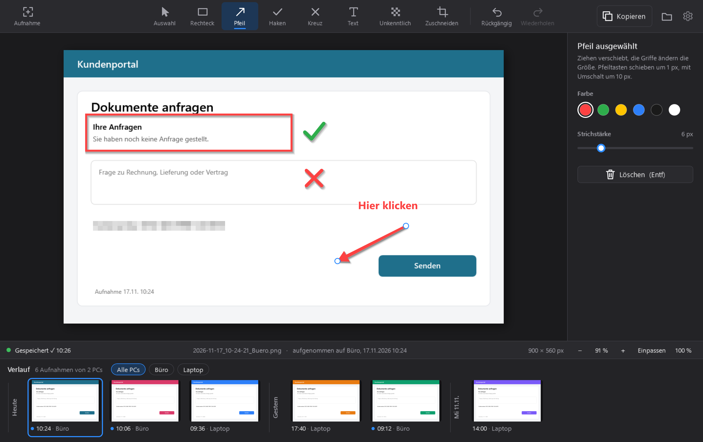
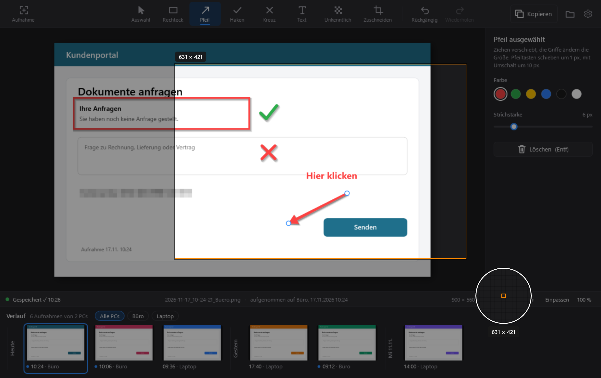
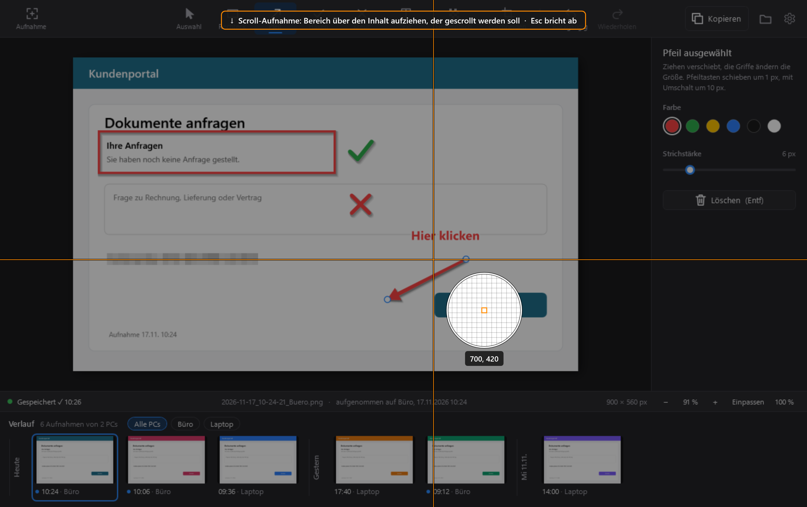
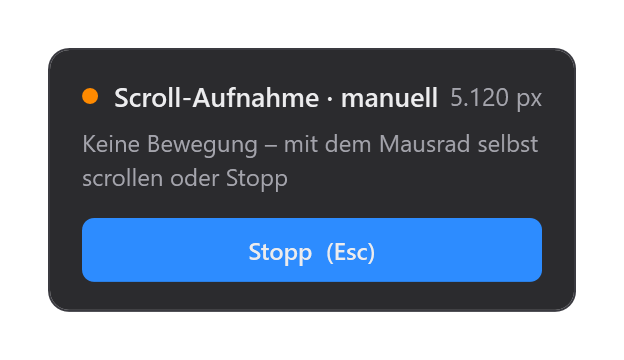
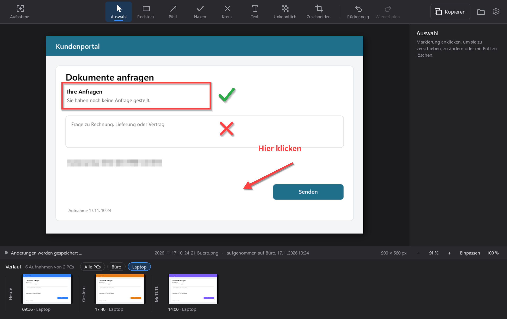

Zeig, was zählt.
Druck-Taste, Bereich aufziehen, markieren. Der Screenshot ist schon gespeichert und in der Zwischenablage.
- Ohne Konto
- Ohne Abo
- Open Source (MIT)

Aufnehmen, markieren, fertig.
Es gibt keinen Dialog, keine Speichern-Abfrage und keinen Upload. ShotMark wartet im Infobereich der Taskleiste und ist da, sobald du die Taste drückst.
Druck-Taste drücken
Der Bildschirm friert sofort ein – auch Tooltips und offene Menüs bleiben im Bild. Jedes andere Kürzel geht auch.
Bereich aufziehen
Lupe und Pixelmaß helfen dir, genau die Kante zu treffen, über alle Monitore hinweg.
Markieren
Rahmen, Pfeil, Haken, Text – der Editor öffnet sich mit der Aufnahme, bereit zum Markieren.
Gespeichert und in der Zwischenablage, bevor du überhaupt markierst.

Sieben Werkzeuge, jedes auf seiner eigenen Taste.
Alles, was du brauchst, um auf etwas zu zeigen – nichts, was du erst lernen musst. Jedes Werkzeug hat seine eigene Taste, und Rückgängig reicht weit zurück.
Rechteck
REin roter Rahmen um das, worauf es ankommt. Mit Umschalt wird es ein Quadrat.
Pfeil
AVom Anfang zur Spitze ziehen. Umschalt rastet in 45°-Schritten ein.
Haken
HEin grüner Haken für „so ist es richtig“. Klicken setzt ihn, Ziehen bestimmt die Größe.
Kreuz
XEin rotes Kreuz für „so bitte nicht“.
Text
TKlicken und schreiben, mit einer Kontur, die auf jedem Hintergrund lesbar bleibt.
Unkenntlich
UPasswörter, Namen und Kontonummern verpixeln.
Zuschneiden
CSpäter zuschneiden, ohne etwas zu verlieren – das Original bleibt erhalten, der Zuschnitt lässt sich wieder entfernen.
Ein Passwort mit einem Zug unkenntlich machen, mit Strg C das fertige Bild kopieren und dort einfügen, wo es hin soll.
Mehr als ein Screenshot.
Scroll-Aufnahme
Lange Webseiten, Dokumente und Listen in einem Bild. ShotMark scrollt selbst, setzt die Teile zusammen und hört am Ende auf – oder du scrollst langsam selbst. Feste Kopfzeilen erscheinen nur einmal.
Tooltips inklusive
Mit der Maus auf ein Element zeigen, bis der Tooltip erscheint, dann das Kürzel drücken. Der Bildschirm friert beim ersten Tastendruck ein, bevor das Programm den Tooltip schließt.
Später weiter bearbeiten
Jede Aufnahme behält ihr Original und ihre Markierungen getrennt. Öffne sie nächste Woche aus dem Verlauf und verschieb den Pfeil.


Ein gemeinsamer Ordner für alle deine PCs.
Leg den Speicherordner in die Dropbox, in OneDrive oder auf ein Netzlaufwerk, und jeder PC legt seine Aufnahmen dort ab. Der Verlauf zeigt, was wann auf welchem PC entstanden ist – und filtert mit einem Klick nach PC.
Nichts wird überschrieben
Der PC-Name steht in jedem Dateinamen. Bearbeiten zwei PCs dieselbe Aufnahme, fragt ShotMark nach, statt zu überschreiben – neu laden oder als Kopie speichern.
Ganz normale Dateien
Fertige PNGs, die jeder öffnen kann, dazu eine versteckte Projektdatei für spätere Änderungen. Keine Datenbank, keine Bindung an ShotMark.

Warum ShotMark?
Du suchst eine kostenlose Alternative zu Snagit für die täglichen Screenshots? ShotMark erledigt das Alltägliche – aufnehmen, markieren, weitergeben – und lässt alles andere weg. Es startet mit Windows, wartet still im Infobereich und hält sich selbst aktuell.
- Kostenlos, ohne Abo
- Ohne Konto, ohne Anmeldung
- Keine Telemetrie
- Open Source unter MIT-Lizenz
- Aktualisiert sich im Hintergrund
- Deutsch und Englisch, folgt Windows
ShotMark herunterladen.
Für Windows herunterladenImmer die neueste Version · Windows 10 und 11, 64-Bit · keine Adminrechte · kein .NET nötig
Updates kommen von selbst: ShotMark installiert sie, wenn es dich nicht stört – oder beim nächsten Start.